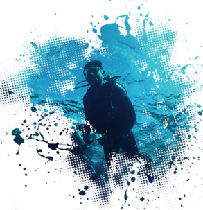

A Master of Marine Engineering focuses on numerical computation and fluid-structure interaction. Have an
open-minded willing to work with people from different background. Eager to develop my analytical skills
and knowledge in practical problems.
- WORK EXPERIENCE
-
RESEARCH ASSISTANT, PART-TIME
National Sun Yat-sen University | July 2015 - May 2018
- Conducted experiment with hydraulic models.
- Analyzed datasets obtained from experiment and numerical simulation.
- Edited and proofread academic articles for publication.
- Assistant to 3-years MOST project, managing accounting affairs and writing annual reports.
- EDUCATION
-
MASTER OF MARINE ENVIRONMENT AND ENGINEERING
National Sun Yat-sen University | 2015 - 2018
- Wrote the programs for data analysis and numerical simulation in MATLAB, Python, and C++.
- Dissertation title: “Method of fundamental solutions on simulating sloshing liquids in 2D
tanks”.
- RESEARCH EXPERIENCE
-
CO-AUTHOR & PRESENTER
Asian Wave And Tidal Energy Conference, Singapore | October 2016
- Title of conference paper: Design Optimization and Stability Analysis of Diffuser Augmented
Duct.
- Designed and executed small-scale testing to validate numerical simulation in drag/lift force
acting on the duct.
-
PRESENTER
International Platform On Ocean Energy For Young Researcher, Japan | February 2016
- Having a group discussion about the barrier and opportunity to Ocean Energy.
- Attend the tour of IOES facility